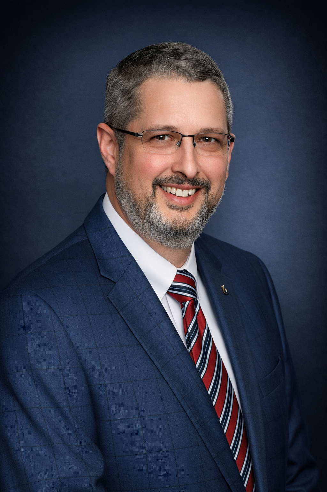
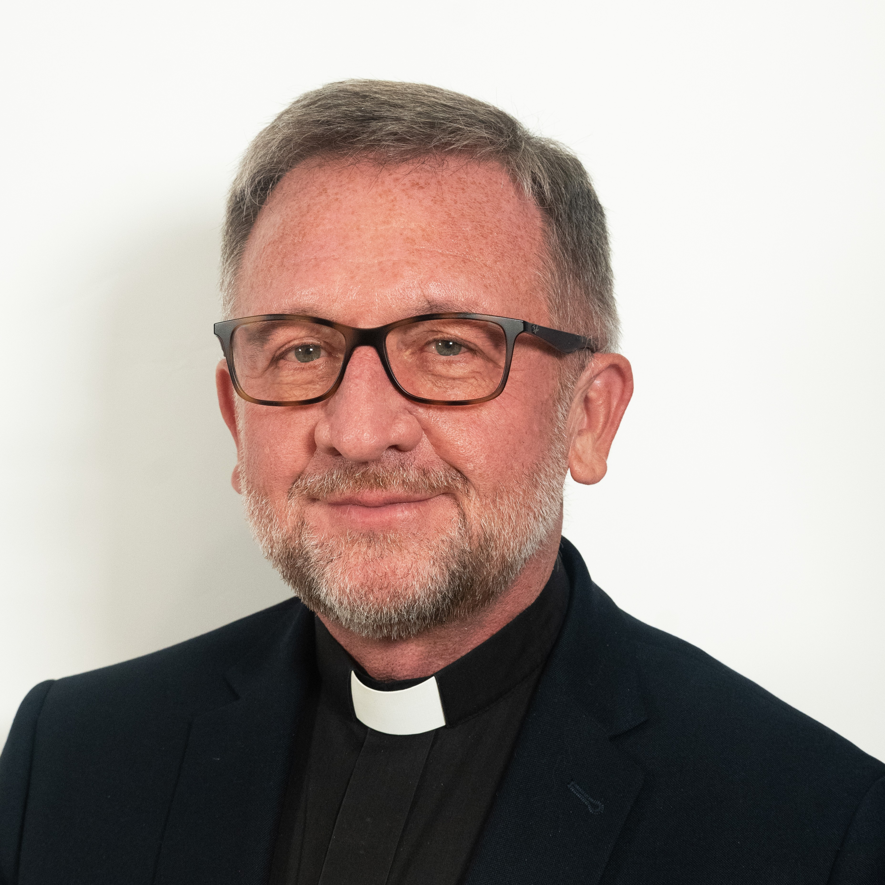
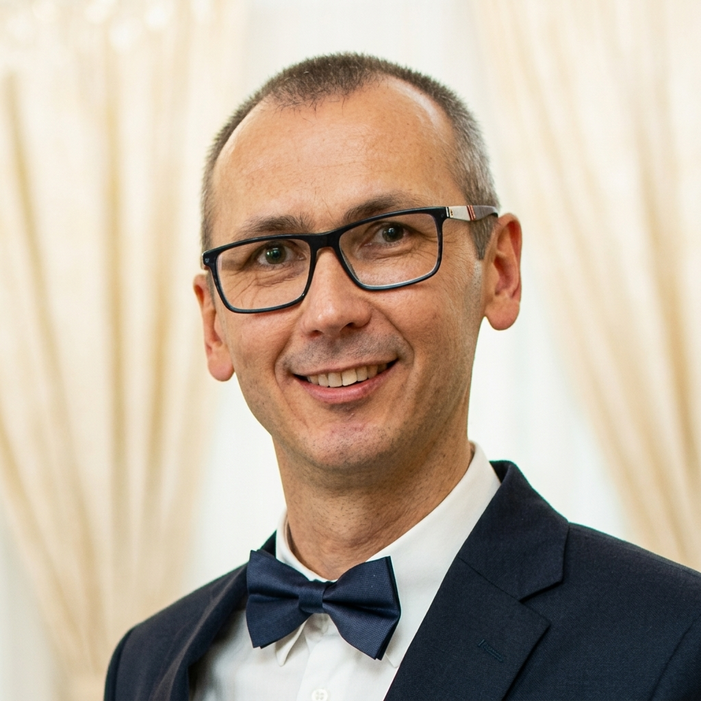
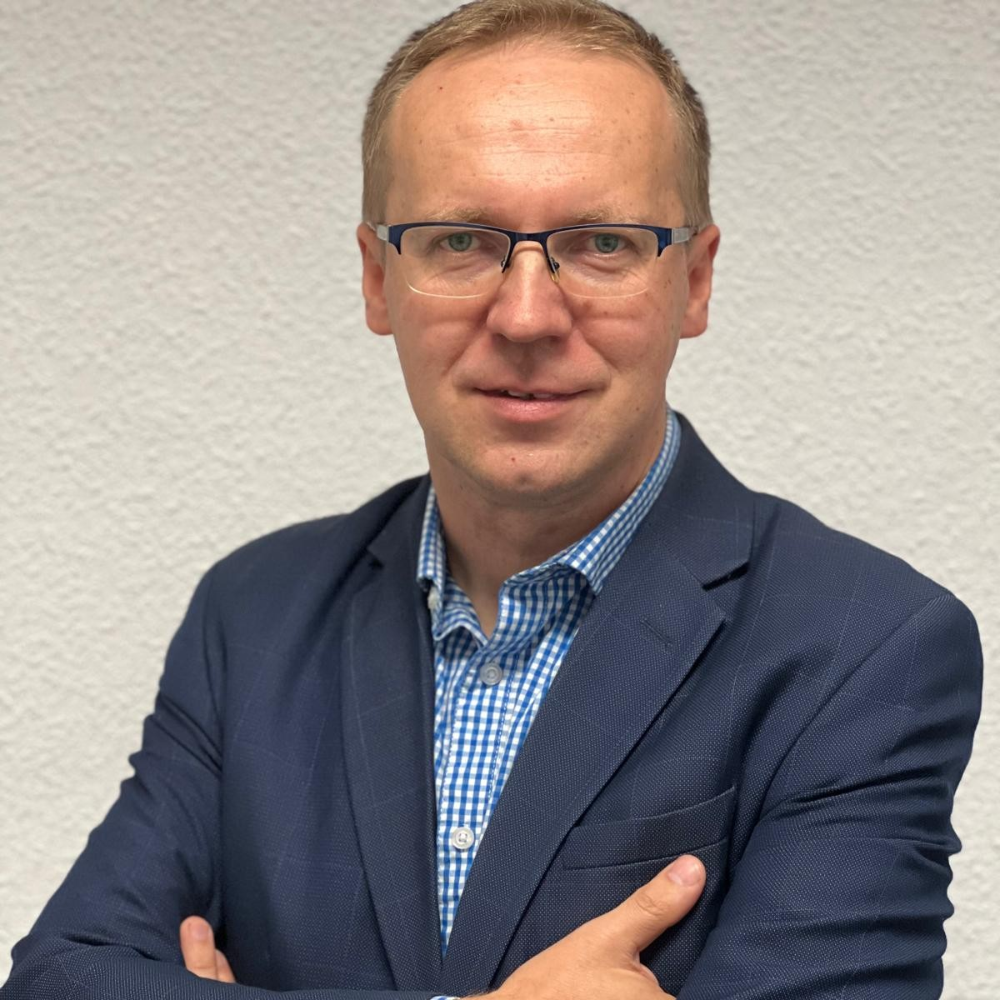
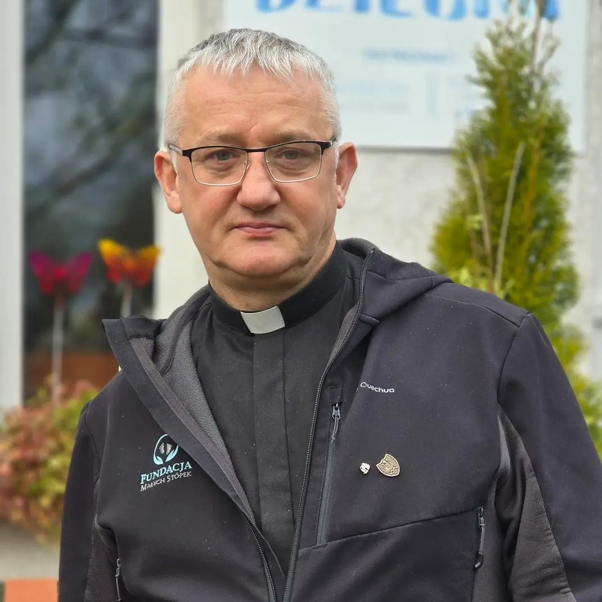
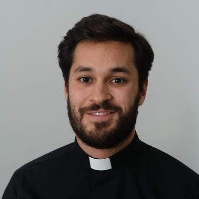

08.00
MSZA ŚWIĘTA
Eucharystia pod przewodnictwem księdza biskupa Grzegorza Olszowskiego w kościele pw. św. Michała Archanioła.
Miejsce: ul. Stolarska 7, Poznań
Eucharystia pod przewodnictwem księdza biskupa Grzegorza Olszowskiego w kościele pw. św. Michała Archanioła.
Miejsce: ul. Stolarska 7, Poznań
Odbiór identyfikatorów i materiałów konferencyjnych.
Miejsce: World Trade Center, Poznań
ks. Rafał Ostrowski – duszpasterz przedsiębiorców w Archidiecezji Poznańskiej i koordynator konferencji
Wojciech Nowicki – przedsiębiorca, pomaga firmom rozwijać liderów i zarządzać kapitałem
Krzysztof Janowski
Doradca i przewodnik rozwoju wewnętrznego. Wspiera liderów w rozwoju osobistym, pomagając im odzyskać większą klarowność, równowagę i poczucie kierunku, budować wartościowe relacje oraz działać w zgodzie ze swoimi wartościami.

Daniel Schachle
Doradca inwestycyjny związany z Knights of Columbus Asset Advisors. Pomaga klientom budować przyszłość finansową poprzez odpowiedzialne inwestowanie zgodne z wartościami i zasadami wiary katolickiej.
Czas na rozmowy, nawiązywanie kontaktów i wymianę doświadczeń.
Rodzina w firmie, firma w rodzinie
Rozmowa o tym, jak wartości, relacje i odpowiedzialność kształtują sposób prowadzenia biznesu. Panel poświęcony budowaniu organizacji opartych na zaufaniu, szacunku do człowieka i długofalowym myśleniu – zarówno w przedsiębiorstwach rodzinnych, jak i firmach, które tworzą swoją kulturę bez udziału członków rodzin w strukturach organizacji.
Kameralna sesja poświęcona roli rodziny, relacji i wartości w życiu przedsiębiorcy. Przestrzeń do refleksji nad tym, jak osobiste relacje wpływają na przywództwo, podejmowanie decyzji i sposób budowania firmy.
Sesja poświęcona temu, jak przedsiębiorczość zakorzeniona w hojności może służyć dobru wspólnemu i tworzyć pozytywny wpływ społeczny. Rozmowa o tym, jak biznes może wykraczać poza rozwój firmy i stawać się przestrzenią odpowiedzialności, służby oraz wartościowego wkładu w życie społeczne.
Sigrid Marz
Prezydent UNIAPAC - międzynarodowej organizacji zrzeszającej przedsiębiorców kierujących się wartościami chrześcijańskimi. Wspiera rozwój idei odpowiedzialnego biznesu i przedsiębiorczości służącej dobru wspólnemu.

ks. prof. Arkadiusz Wuwer
Teolog, wykładowca Uniwersytetu Śląskiego w Katowicach, specjalista w zakresie katolickiej nauki społecznej. Podejmuje refleksję nad rolą wartości chrześcijańskich, odpowiedzialności społecznej oraz miejscem przedsiębiorcy w budowaniu dobra wspólnego.
Czas na rozmowy, nawiązywanie kontaktów i wymianę doświadczeń.
Krótkie wystąpienia przedsiębiorców prezentujących swoje firmy, inicjatywy i podejście do budowania biznesu opartego na wartościach, odpowiedzialności i zaangażowaniu.
Rozmowa o tym, jak przedsiębiorcy poprzez odpowiedzialność, hojność i zaangażowanie społeczne mogą wywierać pozytywny wpływ na swoje otoczenie oraz przyczyniać się do budowania dobra wspólnego.

Robert Bartkowiak
Prowadzący
Biegły rewident, prezes zarządu Avem Audyt sp. z o.o., biegły sądowy.

Krzysztof Zuba
Uczestnik
Jeden z liderów Rycerzy Kolumba w Polsce, zaangażowany w rozwój wspólnoty oraz działalność opartą na wartościach, służbie i odpowiedzialności społecznej.

ks. Tomasz Kancelarczyk
Uczestnik
Prezes Fundacji Małych Stópek, zaangażowany w działania na rzecz ochrony życia oraz wsparcie kobiet i rodzin.

Krzysztof Drabik
Uczestnik
Przedsiębiorca, który łączy ekstremalne wyzwania sportowe z działalnością charytatywną, wykorzystując swoje osiągnięcia do niesienia pomocy i inspirowania innych.
Sesja poświęcona roli hojności, odpowiedzialności i poczucia misji w przedsiębiorczości. Przestrzeń do refleksji i rozmowy o tym, jak biznes może stać się sposobem tworzenia trwałej wartości i pozytywnego wpływania na innych.
Miejsce: Sala Saffron, GARDENcity, Międzynarodowe Targi Poznańskie
Eucharystia w Bazylice kolegiackiej Matki Bożej Nieustającej Pomocy, św. Marii Magdaleny i św. Stanisława Biskupa w Poznaniu – Fara Poznańska.
Miejsce: ul. Gołębia 1, Poznań

ks. Francisco Mota SJ
Doradca duchowy UNIAPAC
Konferencja i warsztat formacyjny dla przedsiębiorców...
Miejsce: Kamea, ul. Klasztorna 17/18, Poznań
Wspólny obiad uczestników drugiego dnia konferencji.
zwiedzanie Bazyliki Archikatedralnej św. Apostołów Piotra i Pawła w Poznaniu.
Wybierz dzień, który chcesz przeżyć razem z nami.
Bilet jednodniowy daje Ci pełny dostęp do programu wybranego dnia konferencji. Możesz zdecydować, czy chcesz uczestniczyć w głównym dniu konferencyjnym 9 października, czy wybrać 10 października — dzień integracji, relacji i formacji.
Wybierz dzień:
Pełne doświadczenie konferencji — dwa dni inspiracji, relacji i formacji
Bilet dwudniowy daje Ci możliwość uczestniczenia w pełnym programie konferencji „Bóg, Rodzina, Firma, Hojność” — zarówno w części merytorycznej, jak i w dniu integracji, formacji i pogłębionej refleksji.
To propozycja dla osób, które chcą poświęcić dwa dni na rozwój, budowanie relacji z innymi przedsiębiorcami oraz spojrzenie na swoją rolę przedsiębiorcy w perspektywie wiary.
bilet nie obejmuje noclegu ani udziału w bankiecie
Pełny udział w konferencji oraz wieczornym bankiecie
Bilet Premium obejmuje pełny program dwóch dni konferencji „Bóg, Rodzina, Firma, Hojność”, udział w bankiecie oraz dodatkowe materiały dostępne w tym wariancie biletu.
To propozycja dla osób, które chcą w pełni uczestniczyć w konferencji, przedłużyć wspólny czas podczas bankietu oraz zachować ze sobą część treści i doświadczeń także po zakończeniu wydarzenia.
bilet nie obejmuje noclegu
Pełny udział w konferencji oraz możliwość prezentacji swojej firmy
Bilet Premium Plus obejmuje pełny program dwóch dni konferencji „Bóg, Rodzina, Firma, Hojność”, udział w bankiecie, dodatkowe materiały oraz możliwość zaprezentowania swojej firmy podczas konferencji.
To propozycja dla przedsiębiorców, którzy chcą nie tylko uczestniczyć w konferencji, ale również przedstawić swoją działalność, wartości i misję innym przedsiębiorcom oraz podzielić się tym, czym zajmują się na co dzień.
bilet nie obejmuje noclegu